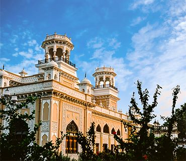
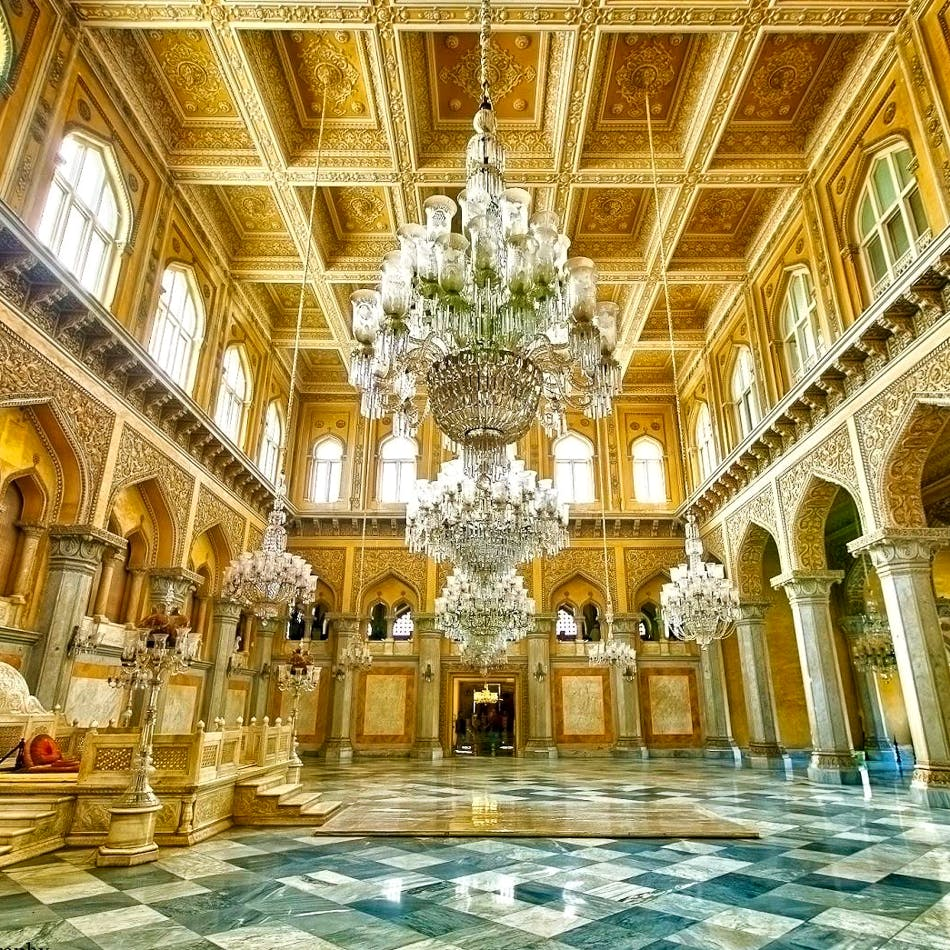

CHOWMAHALLA PALACE

Chowmahalla Palace or Chowmahallat (from chār mahallāt, lit. "four palaces" in Dakhini Urdu) is the palace of the Nizams of Hyderabad State in Hyderabad, Telangana, India.
It was the seat of the Asaf Jahi dynasty and was the official residence of the Nizams of Hyderabad while they ruled their state. The palace was built by Nizam Salabat Jung[2] and remains the property of the Nizam. Some members of the Hyderabadi Nizam family have wed here.
The word chār or chahār, and its variation chow, means "four" and the word mahal means "palace" in Urdu, Hindi and Persian.[5] All ceremonial functions including the accession of the Nizams and receptions for the Governor-general were held at this palace.
The UNESCO Asia Pacific Merit award for cultural heritage conservation was presented to Chowmahalla Palace on 15 March 2010. UNESCO representative Takahiko Makino formally handed over the plaque and certificate to Princess Esra, former wife and GPA holder of Prince Mukarram Jah Bahadur
Chowmahalla Palace or Chowmahallat (from chār mahallāt, lit. "four palaces" in Dakhini Urdu) is the palace of the Nizams of Hyderabad State in Hyderabad, Telangana, India.
It was the seat of the Asaf Jahi dynasty and was the official residence of the Nizams of Hyderabad while they ruled their state. The palace was built by Nizam Salabat Jung[2] and remains the property of the Nizam. Some members of the Hyderabadi Nizam family have wed here.
The word chār or chahār, and its variation chow, means "four" and the word mahal means "palace" in Urdu, Hindi and Persian.[5] All ceremonial functions including the accession of the Nizams and receptions for the Governor-general were held at this palace.
The UNESCO Asia Pacific Merit award for cultural heritage conservation was presented to Chowmahalla Palace on 15 March 2010. UNESCO representative Takahiko Makino formally handed over the plaque and certificate to Princess Esra, former wife and GPA holder of Prince Mukarram Jah Bahadur

How to reach:

By Air
The nearest airport is in hyderabad

By Train
The nearest railways is in hyderabad

By Road
Chowmahalla palace, the most famous tourist destination in Hyderabad, can be used as a landmark. A bus,cab,local rickshaw can also be taken to reach the capital.